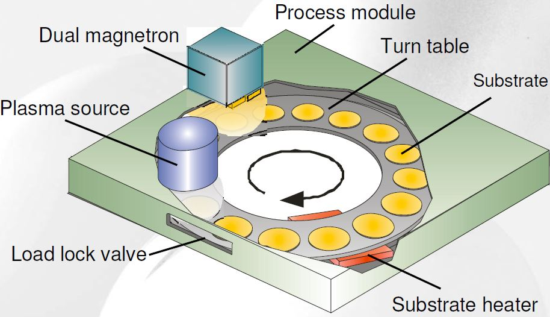
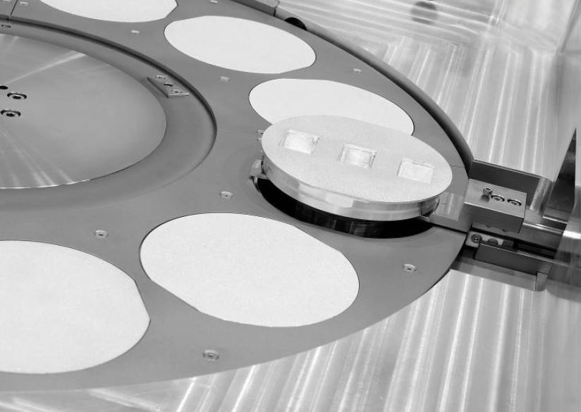
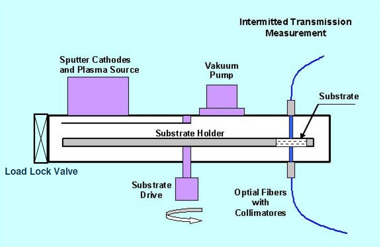
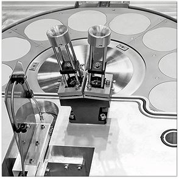
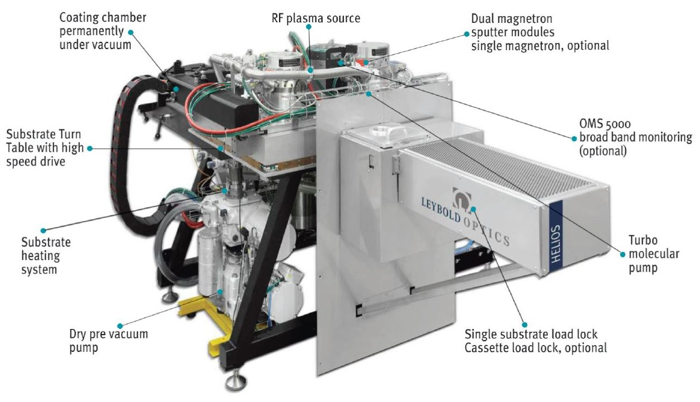

Ref : http://www.vacuum-uk.org/pdfs/ThinFilms/Leybold%20Optics.pdf
http://www.tevak.cz/rubrika/258-Leybold-optics-Precision-Optics-HELIOS/index.htm
http://congrexprojects.com/Custom/ICSO/2014/Papers/1.%20Tuesday%207%20October/Session%202B%20Filters%20-%20Coatings/2.66488_Begou.pdf
Plasma Assisted Reactive Magnetron Sputtering





All the optical components are manufactured with the help of a LEYBOLD Optics HELIOS 4” machine, where low and high index materials are both deposited through Plasma Assisted Reactive Magnetron Sputtering (PARMS) [1] [2].
A seen in Fig. 1., the main chamber of the machine is subdivided in 4 deposition/treatment zones, two dedicated for dielectric materials (MF magnetron sputtering), one for metallic deposition (DC magnetron sputtering, not used here) and the last one for oxygen plasma assistance (PBS).
The substrates are set on a 12-position rotating sample holder (rotation at 240 rpm).
According to the deposited material, either low or high index, the corresponding MF magnetron sputtering cathode is switched on; the oxygen plasma assistance is used for densification of the coating and also to respect the stoichiometry of the layers. Typical deposition rates of low and high index materials are respectively around 0.40-0.45 nm.s -1 and 0.50-0.60 nm.s-1, which means that less than an atomic layer of material is deposited at each turn of the sample holder.
Thicknesses of the different deposited layers are optically controlled, in a transmission mode, at a precisely selected wavelength through the Optical Monitoring System OMS5000 developed by LEYBOLD Optics [3].